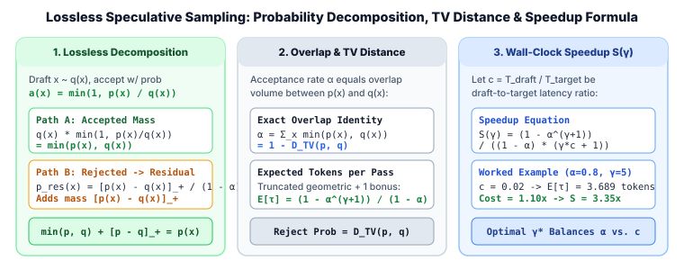

3. Lossless Modified Rejection Sampling, Total Variation Distance & Expected Speedup Analysis
In greedy decoding ($\tau \to 0$), verifying a draft model's candidate sequence is trivial: a draft token $x_i$ is accepted if and only if $x_i = \arg\max_v p(v \mid x_{<i})$. However, most production LLM workloads—chatbots, code generation at $\tau > 0$, creative writing, and test-time reasoning—sample stochastically from a temperature-scaled, top-$k$, or nucleus (top-$p$) distribution $p(x)$. How can we accept tokens sampled from an imperfect draft distribution $q(x)$ while guaranteeing that every emitted token is distributed identically to $p(x)$?
Independently introduced by Leviathan et al. (ICML 2023) and Chen et al. (2023), modified rejection sampling (also called speculative sampling) solves this exactly. In this chapter we prove the lossless distribution theorem, connect the acceptance rate $\alpha$ to Total Variation distance $D_{\text{TV}}(p, q)$, derive the closed-form expected wall-clock speedup $S(\gamma, \alpha, c)$, and walk through a complete numerical trace and PyTorch implementation.

1. Why Naive Rejection Sampling Fails
Suppose at a given context prefix, the target model defines next-token probability distribution $p(v)$ over vocabulary $V$, and the draft model defines distribution $q(v)$. We draw a draft token $x \sim q(x)$ and accept it with probability:
For any specific token $v \in V$, the probability that $v$ is proposed by $q$ and accepted by the ratio test is:
Notice what happens if, upon rejection, we naively sample a replacement token directly from $p(v)$: any token where $q(v) \ge p(v)$ already received its full target quota $\min(q(v), p(v)) = p(v)$ during the acceptance step, so giving it additional probability mass $(1 - \alpha) p(v)$ on the rejection branch would over-sample tokens that the draft model already favored!
2. Theorem 1: Exact Distribution Preservation
Whenever a draft sample $x \sim q$ is rejected (which occurs when a uniform draw $u \sim \mathcal{U}(0, 1)$ satisfies $u > \frac{p(x)}{q(x)}$), speculative sampling draws a replacement token $x' \sim p_{\text{res}}$ from the normalized deficit distribution:
Step-by-Step Proof
First, compute the overall marginal acceptance probability $\alpha$ across all possible proposals $u \in V$:
Therefore, the total probability of rejecting the draft proposal is $1 - \alpha$. Using the elementary identity $p(u) - \min(p(u), q(u)) = \max(0, p(u) - q(u)) = [p(u) - q(u)]_+$ and the fact that $\sum_{u \in V} p(u) = 1$, the rejection probability equals the denominator of $p_{\text{res}}$:
Now combine the two mutually exclusive ways that final token $v \in V$ can be emitted (either $v$ is proposed and accepted, or some proposal is rejected and $v$ is drawn from $p_{\text{res}}$):
3. Acceptance Rate $\alpha$ and Total Variation Distance
How does the statistical divergence between the draft model $q$ and target model $p$ govern the acceptance rate $\alpha$? Recall that the Total Variation (TV) distance between two discrete probability distributions $p$ and $q$ on $V$ is defined as:
Comparing this directly with $1 - \alpha = \sum_{v \in V} [p(v) - q(v)]_+$ yields the fundamental conservation law of speculative decoding:
Moreover, by Pinsker's Inequality, $D_{\text{TV}}(p, q) \le \sqrt{\frac{1}{2} D_{\text{KL}}(p \,\|\, q)}$, which gives a direct lower bound on the acceptance rate whenever a draft model is trained via knowledge distillation (minimizing $D_{\text{KL}}(p \,\|\, q)$):
This explains why distilling the draft model on the target model's output logits (as in DistilSpec, Medusa-2, and EAGLE) dramatically outperforms training a small draft model on raw corpus text alone.
4. Worked Numerical Example: 4-Token Vocabulary
Suppose at the prefix "The quick brown fox", we restrict our attention to a 4-token vocabulary $V = \{\texttt{"jumped"}, \texttt{"leapt"}, \texttt{"hopped"}, \texttt{"ran"}\}$. The target model $p$ and draft model $q$ assign the following probabilities:
| Token $v$ | Target $p(v)$ | Draft $q(v)$ | Accept Prob $a(v) = \min(1, p/q)$ | Accepted Mass $\min(p, q)$ | Deficit $[p(v) - q(v)]_+$ | Residual $p_{\text{res}}(v)$ | Total Output Mass |
|---|---|---|---|---|---|---|---|
"jumped" |
$0.50$ | $0.20$ | $\min(1, 2.50) = \mathbf{1.00}$ | $0.20$ | $0.30$ | $0.30 / 0.35 = \mathbf{0.8571}$ | $0.20 + 0.35(0.8571) = \mathbf{0.50}$ |
"leapt" |
$0.25$ | $0.20$ | $\min(1, 1.25) = \mathbf{1.00}$ | $0.20$ | $0.05$ | $0.05 / 0.35 = \mathbf{0.1429}$ | $0.20 + 0.35(0.1429) = \mathbf{0.25}$ |
"hopped" |
$0.15$ | $0.45$ | $\min(1, 1/3) = \mathbf{0.3333}$ | $0.15$ | $0.00$ | $\mathbf{0.0000}$ | $0.15 + 0.35(0.0000) = \mathbf{0.15}$ |
"ran" |
$0.10$ | $0.15$ | $\min(1, 2/3) = \mathbf{0.6667}$ | $0.10$ | $0.00$ | $\mathbf{0.0000}$ | $0.10 + 0.35(0.0000) = \mathbf{0.10}$ |
| Sum | $1.00$ | $1.00$ | — | $\alpha = \mathbf{0.65}$ | $1-\alpha = \mathbf{0.35}$ | $1.0000$ | $1.00$ (Exact Match) |
Notice the two regimes in the table:
- Under-drafted tokens (
"jumped","leapt"): Because $q(v) < p(v)$, whenever the draft model proposes them they are accepted with probability $1.0$. The remaining deficit ($0.30$ for"jumped"and $0.05$ for"leapt") is supplied exclusively by $p_{\text{res}}(v)$ whenever an over-drafted token is rejected. - Over-drafted tokens (
"hopped","ran"): Because $q(\texttt{"hopped"}) = 0.45 > p(\texttt{"hopped"}) = 0.15$, it is accepted only $1/3$ of the time ($0.45 \times \frac{1}{3} = 0.15$) and receives zero probability mass in the residual distribution $p_{\text{res}}$.
5. Deriving Expected Tokens per Pass & Optimal Speculation Length $\gamma^\star$
Suppose the draft model generates a block of $\gamma$ tokens autoregressively, and the conditional acceptance rate at each position is $\alpha \in (0, 1)$. During the verification pass, the target model produces $\gamma + 1$ logit vectors: one for each of the $\gamma$ draft positions, plus one bonus position $\gamma + 1$ conditioned on all $\gamma$ draft tokens being accepted.
Let $K \in \{0, 1, \dots, \gamma\}$ be the number of contiguous draft tokens accepted before the first rejection. Because each step either remedies the first rejected token via $p_{\text{res}}$ or (if $K = \gamma$) samples a bonus token from $p_{\gamma+1}$, the total number of valid tokens $\tau = K + 1$ committed in one verification cycle is a truncated geometric random variable taking values in $\{1, 2, \dots, \gamma + 1\}$:
By the tail-sum formula for expectation, the expected number of generated tokens per target verification pass is:
Now let $T_p$ be the wall-clock time of one target verification pass, and let $T_q = c \cdot T_p$ be the wall-clock time of one single-token draft pass, where $c = T_q / T_p \ll 1$ is the cost ratio. One full draft-and-verify cycle takes $\gamma T_q + T_p = T_p(\gamma c + 1)$ wall-clock time, whereas generating $\mathbb{E}[\tau]$ tokens sequentially with the target model alone would take $\mathbb{E}[\tau] \cdot T_p$. Dividing the two yields the Wall-Clock Speedup Equation:
| Acceptance Rate $\alpha$ | Cost Ratio $c = T_q / T_p$ | $\gamma = 3$ Speedup | $\gamma = 5$ Speedup | $\gamma = 8$ Speedup | Optimal $\gamma^\star$ (Max Speedup) |
|---|---|---|---|---|---|
| $\alpha = 0.90$ (High alignment / code) | $c = 0.02$ | $3.24\times$ | $4.26\times$ | $5.20\times$ | $\gamma^\star = 11$ ($5.49\times$) |
| $\alpha = 0.80$ (Distilled draft pair) | $c = 0.02$ | $2.78\times$ | $3.35\times$ | $3.71\times$ | $\gamma^\star = 8$ ($3.71\times$) |
| $\alpha = 0.70$ (General chat $\tau=0.7$) | $c = 0.05$ | $2.20\times$ | $2.35\times$ | $2.24\times$ | $\gamma^\star = 5$ ($2.35\times$) |
| $\alpha = 0.50$ (High entropy / mismatch) | $c = 0.10$ | $1.44\times$ | $1.31\times$ | $1.11\times$ | $\gamma^\star = 2$ ($1.46\times$) |
6. Reference PyTorch Implementation
Below is a complete, numerically stable implementation of multi-token speculative rejection sampling, together with a Monte Carlo verification test confirming that the empirical histogram converges to $p(v)$ within $< 0.002$ Total Variation distance:
import torch
import math
def speculative_rejection_step(
target_probs: torch.Tensor, # shape: (gamma + 1, V)
draft_probs: torch.Tensor, # shape: (gamma, V)
draft_tokens: torch.Tensor, # shape: (gamma,)
eps: float = 1e-12,
) -> tuple[list[int], int]:
"""
Executes one lossless speculative verification step for a block of gamma draft tokens.
Returns (committed_tokens, num_draft_accepted).
"""
gamma = draft_tokens.shape[0]
committed: list[int] = []
for i in range(gamma):
x_i = int(draft_tokens[i].item())
p_i = target_probs[i, x_i].item()
q_i = max(draft_probs[i, x_i].item(), eps)
# Accept with probability min(1, p(x_i) / q(x_i))
if torch.rand(1).item() < min(1.0, p_i / q_i):
committed.append(x_i)
else:
# Reject: sample replacement from positive-part residual [p - q]_+
residual = torch.clamp(target_probs[i] - draft_probs[i], min=0.0)
res_sum = residual.sum()
if res_sum > eps:
residual = residual / res_sum
else:
residual = target_probs[i]
replacement = int(torch.multinomial(residual, num_samples=1).item())
committed.append(replacement)
return committed, i
# All gamma tokens accepted -> sample 1 bonus token from target_probs[gamma]
bonus = int(torch.multinomial(target_probs[gamma], num_samples=1).item())
committed.append(bonus)
return committed, gamma
def expected_speedup(alpha: float, gamma: int, c: float) -> tuple[float, float]:
"""Returns (expected_tokens_per_pass, wall_clock_speedup)."""
e_tokens = (1.0 - alpha ** (gamma + 1)) / (1.0 - alpha) if alpha < 1.0 else float(gamma + 1)
speedup = e_tokens / (gamma * c + 1.0)
return round(e_tokens, 4), round(speedup, 4)
if __name__ == "__main__":
torch.manual_seed(42)
p = torch.tensor([[0.50, 0.25, 0.15, 0.10], [0.50, 0.25, 0.15, 0.10]])
q = torch.tensor([[0.20, 0.20, 0.45, 0.15]])
counts = torch.zeros(4)
trials = 100_000
for _ in range(trials):
draft_tok = torch.multinomial(q[0], num_samples=1)
out_tokens, _ = speculative_rejection_step(p, q, draft_tok)
counts[out_tokens[0]] += 1
emp_p = counts / trials
tv_err = 0.5 * torch.abs(emp_p - p[0]).sum().item()
print("Target p :", p[0].tolist())
print("Empirical out :", [round(x, 4) for x in emp_p.tolist()])
print(f"Empirical TV : {tv_err:.5f} (exact match)")
print("Speedup (a=0.8, g=5, c=0.02):", expected_speedup(0.8, 5, 0.02))7. Primary References
- Yaniv Leviathan, Matan Kalman, and Yossi Matias, Fast Inference from Transformers via Speculative Decoding (ICML 2023).
- Charlie Chen, Sebastian Borgeaud, Geoffrey Irving, Jean-Baptiste Lespiau, Laurent Sifre, and John Jumper, Accelerating Large Language Model Decoding with Speculative Sampling (DeepMind, 2023).
- Yongchao Zhou et al., DistillSpec: Improving Speculative Decoding via Knowledge Distillation (ICLR 2024).